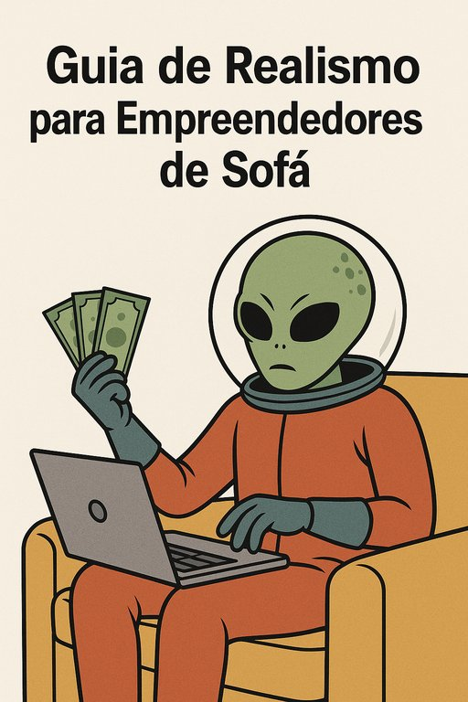

Publicado em 2025-06-24 13:44:01
Inspirado nas profundezas das perguntas ingénuas que pululam pelas redes, este guia serve como um manual de sobrevivência para todos os que acreditam que basta ter uma “ideia genial” para que o universo conspire em seu favor… sem custos.
Todos têm ideias. Algumas até durante o banho. O que distingue um empreendedor real de um sonhador de sofá é a capacidade de transformar essa ideia em produto, serviço ou solução — e isso dá trabalho. Muito. Só a ideia, por si só, não paga contas nem atrai developers (nem os de Marte).
Se estás à procura de um programador para fazer o teu site e app de graça, faz primeiro o seguinte exercício: pergunta ao teu mecânico se te troca o motor do carro por 'visibilidade'. Ou ao teu padeiro se te dá o pão 'em troca de uma ideia brilhante'. Spoiler: vais sair com fome e a pé.
‘Eu dou-te visibilidade’ é o equivalente moderno de ‘paga-se em experiência’. A visibilidade só é moeda de troca quando és um megainfluencer com seguidores reais e uma taxa de conversão superior à da economia portuguesa. Até lá, paga aos profissionais. Ou aprende a fazer.
Muitos acreditam que basta chamar alguém de 'cofundador' para que ele aceite trabalhar 800 horas sem receber. Mas cofundador não é sinónimo de escravo emocional. É alguém que partilha visão, risco e esforço — com responsabilidade real. Se não tens nada a dar, ninguém te vai acompanhar só porque pareces entusiasmado.
Tens duas opções: ou aprendes tu mesmo a criar um protótipo mínimo, ou angarias capital (com amigos, crowdfunding, investidores) para pagar a alguém. Ambas as opções exigem esforço e comprometimento — e isso separa os empreendedores dos sonhadores Netflix Premium.
Ninguém te deve nada só porque tiveste uma epifania às três da manhã. Se pedes algo de valor a alguém, valoriza-o. Oferece troca justa, honestidade, colaboração real. Ou então guarda a ideia no caderno das boas intenções.
No país mágico dos empreendedores de sofá, tudo é grátis, todos ajudam, ninguém precisa de sustento e os investidores aparecem por osmose. Esse país chama-se 'Ilusão'. E, como os contos de fadas, pode ser bonito… mas não paga a renda.
Artigo de Francisco Gonçalves in Fragmentos de Caos